Appendix E — Benchmarks
E.1 OPAL-T Compared with TRANSPORT and TRACE 3D
The first benchmark family compares OPAL-T with the envelope and transport codes TRACE 3D and TRANSPORT.
E.1.1 TRACE 3D Units and Input
TRACE 3D uses the following phase-space conventions:
- horizontal plane:
x [mm],x' [mrad] - vertical plane:
y [mm],y' [mrad] - longitudinal plane internally:
z [mm],\Delta p/p [mrad] - longitudinal plane for input and output:
\Delta\phi [deg],\Delta W [keV]
The longitudinal conversions quoted in the appendix are
\[ z = -\frac{\beta\lambda}{360}\,\Delta\phi, \tag{E.1}\]
and
\[ \frac{\Delta p}{p} = \frac{\gamma}{\gamma+1}\frac{\Delta W}{W}. \tag{E.2}\]
The benchmark input beam is defined in TRACE 3D by the parameters ER, Q, W, XI, BEAMI, and EMITI. The concrete test case used in the appendix is
ER = 938.27
W = 7
FREQ = 700
BEAMI = 0.0, 4.0,0.0, 4.0, 0.0, 0.0756
EMITI = 0.730, 0.730, 7.56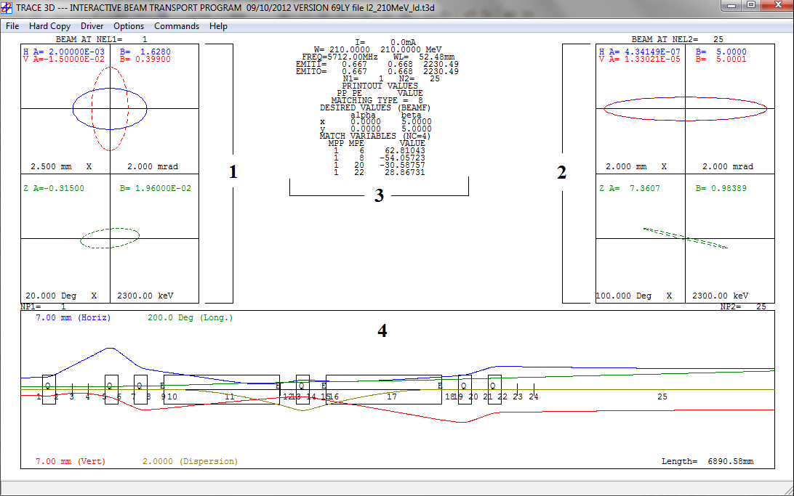
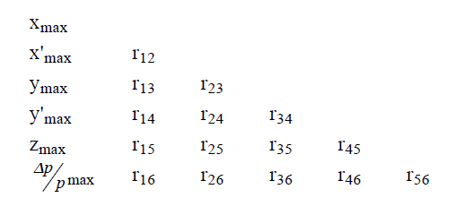
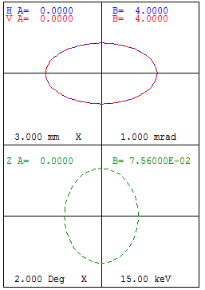
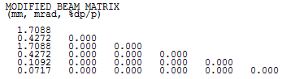
E.1.2 TRANSPORT Units and Input
TRANSPORT uses the standard coordinates:
- horizontal plane:
x [cm],theta [mrad] - vertical plane:
y [cm],phi [mrad] - longitudinal plane:
l [cm],delta [%]
The input beam can be taken from the TRACE 3D sigma matrix after changing the units with the TRANSPORT card 15 settings documented in the appendix.
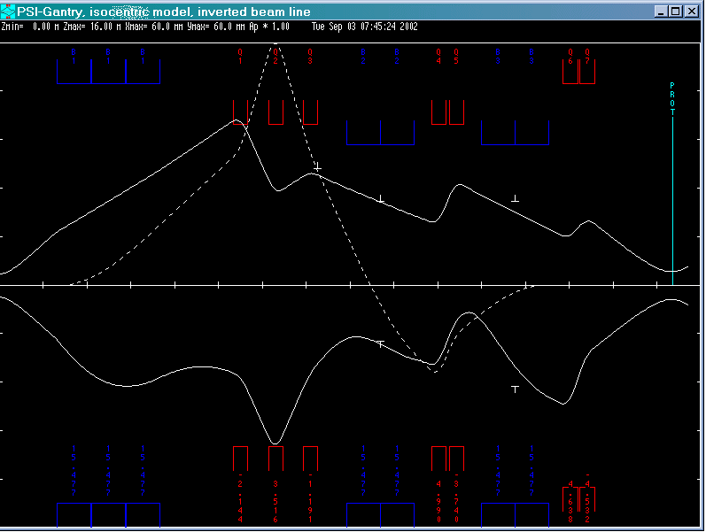
E.1.3 Comparison Case
The transport line consists of:
DRIFT 1:0.250 m- one
SBENDorRBENDwithrho = 0.250 m DRIFT 2:0.250 m
The benchmark discussed in detail is the SBEND case with entrance and exit edge angles.
| TRACE 3D bend parameter | Value | Description |
|---|---|---|
NT |
8 |
type code for bending |
alpha |
30 deg |
angle of bend in the horizontal plane |
rho |
250 mm |
radius of curvature of the central trajectory |
n |
0 |
field-index gradient |
vf |
0 |
horizontal bend |
| TRACE 3D edge parameter | Value | Description |
|---|---|---|
NT |
9 |
type code for edge |
beta |
10 deg |
pole-face rotation |
rho |
250 mm |
radius of curvature |
g |
20 mm |
total gap |
K1 |
0.36945 |
fringe-field factor |
K2 |
0.36945 |
fringe-field factor |
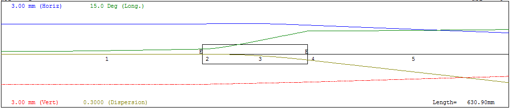
SBEND with edge angles.
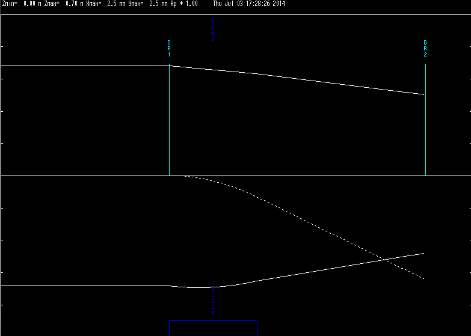
SBEND with edge angles.
E.1.4 Beam-Size and Emittance Comparison
The appendix reports agreement at the end of each line element.
| Position | z [m] |
sigma_x [mm] TRACE |
sigma_y [mm] TRACE |
sigma_x [mm] TRANSPORT |
sigma_y [mm] TRANSPORT |
|---|---|---|---|---|---|
| Input | 0.000 | 1.709 | 1.709 | 1.709 | 1.709 |
| Drift 1 | 0.250 | 1.712 | 1.712 | 1.712 | 1.712 |
| Edge | 0.250 | 1.712 | 1.712 | 1.712 | 1.712 |
| Bend | 0.381 | 1.638 | 1.587 | 1.638 | 1.587 |
| Edge | 0.381 | 1.638 | 1.587 | 1.638 | 1.587 |
| Drift 2 | 0.631 | 1.206 | 1.264 | 1.206 | 1.264 |
| Position | z [m] |
epsilon_x TRACE |
epsilon_z TRACE |
epsilon_x TRANSPORT |
epsilon_z TRANSPORT |
|---|---|---|---|---|---|
| Input | 0.000 | 0.730 | 0.08 | 0.730 | 0.08 |
| Drift 1 | 0.250 | 0.730 | 0.08 | 0.730 | 0.08 |
| Edge | 0.250 | 0.730 | 0.08 | 0.730 | 0.08 |
| Bend | 0.381 | 0.973 | 0.65 | 0.973 | 0.65 |
| Edge | 0.381 | 0.973 | 0.65 | 0.973 | 0.65 |
| Drift 2 | 0.631 | 0.973 | 0.65 | 0.973 | 0.65 |
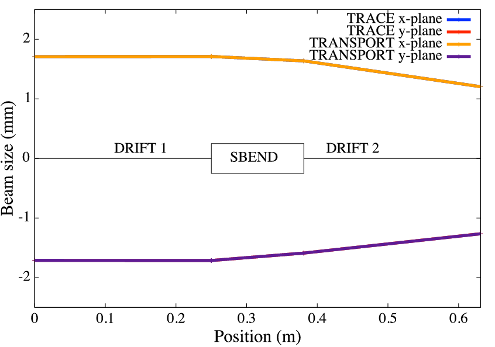
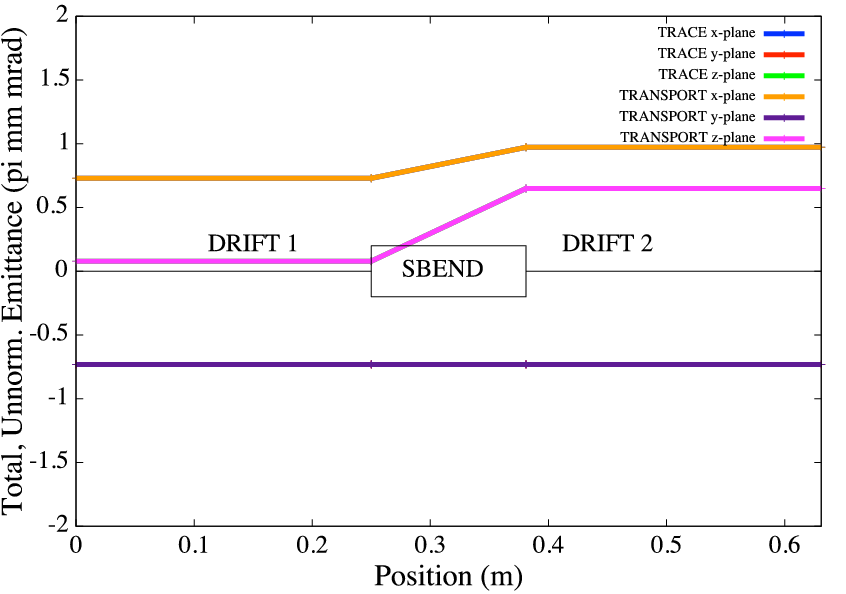
E.1.5 Relation to OPAL-T
The appendix then maps the TRACE / TRANSPORT setup to OPAL-T. The main code feature comparison is:
| Feature | TRACE 3D | TRANSPORT | OPAL-T |
|---|---|---|---|
| simulation type | envelope | envelope | time integration |
| input beam | Twiss, emittance | sigma matrix, momentum | sigma matrix, energy |
| units | mm-mrad, deg-keV |
cm-rad, cm-% |
m-beta gamma |
The input distribution conversion quoted by the appendix is
T3D SIGMA OPAL -T
-------------------------------------------------------
1.7088 mm SIGMAX = 1.7088/sqrt(5)e-3 m
0.4272 mrad SIGMAPX = 0.4272/sqrt(5)*0.1224e-3
1.7088 mm SIGMAY = 1.7088/sqrt(5)e-3 m
0.4272 mrad SIGMAPY = 0.4272/sqrt(5)*0.1224e-3
0.1092 mm SIGMAZ = 0.1092/sqrt(5)e-3 m
0.0717 % SIGMAPZ = (0.0717*10)/sqrt(5)*0.1224e-3leading to the documented GAUSS distribution example.
The OPAL-T bend comparison is shown for three cases:
SBENDwithout edge anglesSBENDwith edge anglesSBENDwith nonzero field indexK1
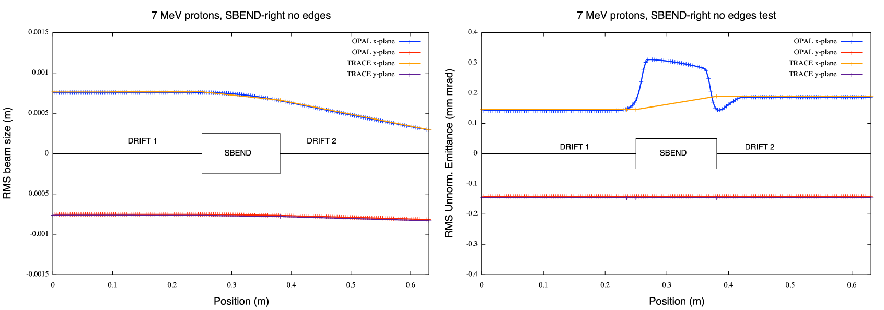
OPAL-T hard-edge SBEND without fringe edges.
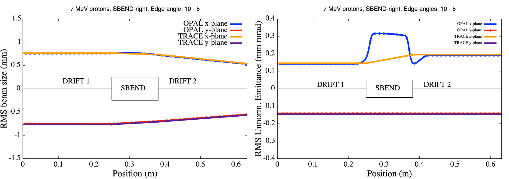
OPAL-T hard-edge SBEND with edge effects.
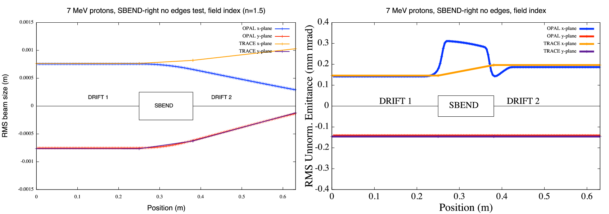
OPAL-T comparison with field index and default map.
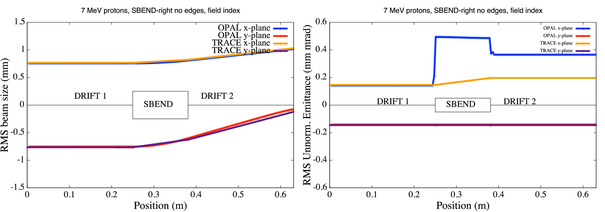
OPAL-T comparison with field index and test map.
E.2 Hard-Edge Dipole Comparison with ELEGANT
The second benchmark family studies a hard-edge dipole against ELEGANT. Because the default 1DPROFILE1-DEFAULT map in OPAL includes finite fringe extent, the appendix proposes the following hard-edge replacement:
1DProfile1 0 0 2
-0.00000001 0.0 0.00000001 3
-0.00000001 0.0 0.00000001 3
-99.9
-99.9The intent is to suppress the fringe-field B_z contribution and recover the same hard-edge behavior that ELEGANT assumes when FINT = 0.
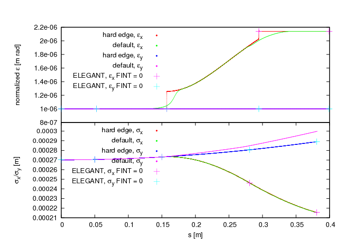
E.2.1 Integration Time-Step Dependence
The appendix then studies the effect of integration time step and fringe-field range. The main conclusion is that time-step size has the larger impact on the accuracy.
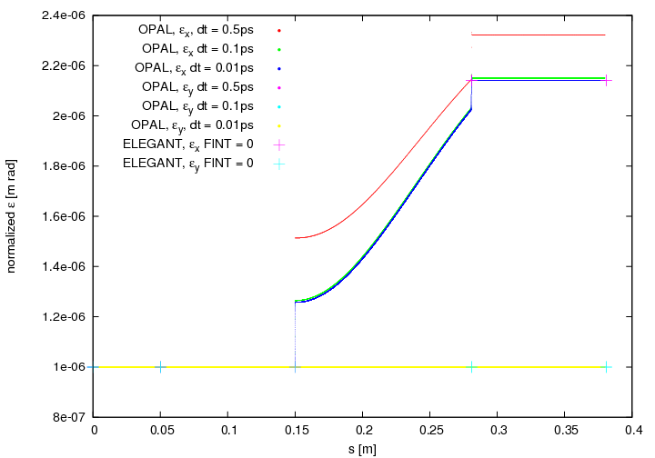
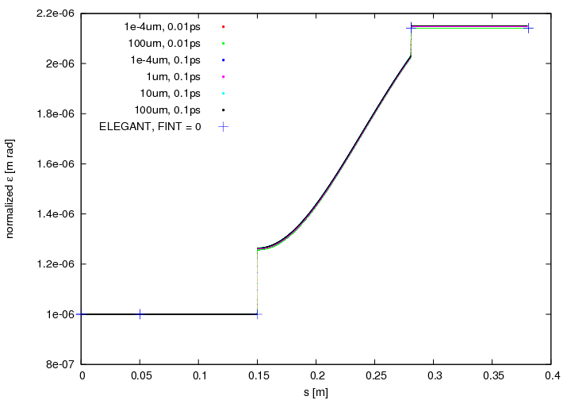
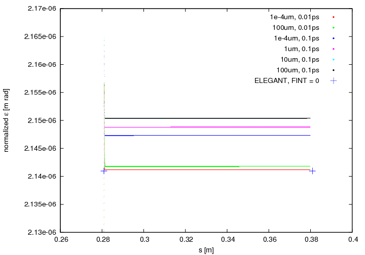
E.3 1D CSR Comparison with ELEGANT
The CSR benchmark uses an SBEND followed by a drift, both with WAKEF = FS_CSR_WAKE enabled. For comparison with ELEGANT watch-point output, the appendix converts the trace-space quantities by
\[ P_x = x'\,\beta\gamma, \qquad P_y = y'\,\beta\gamma, \qquad s = (\bar t - t)\,\beta c. \tag{E.3}\]
The benchmark uses a simple line with 0.1 m drift, 30 deg bend, and 0.4 m drift. Without CSR, the codes agree closely; with CSR enabled, the average momentum change and longitudinal emittance still agree well, while the horizontal normalized emittance differs because OPAL and ELEGANT do not use exactly the same fringe-field treatment and emittance definition.
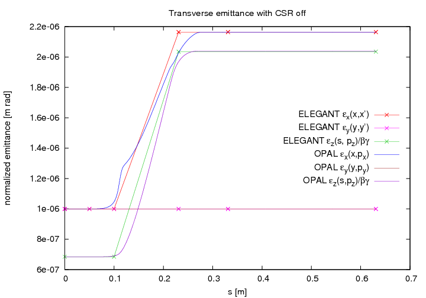
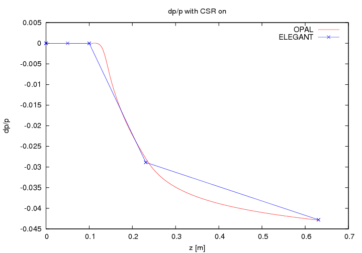
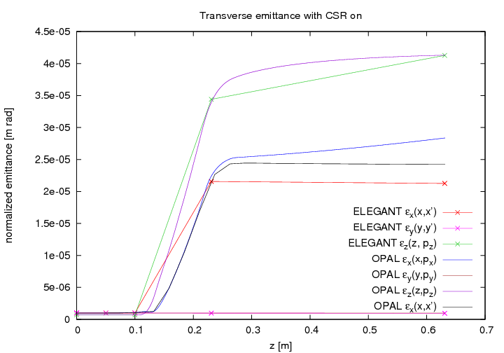
One important detail from the original appendix is that the normalized horizontal emittance in OPAL continues to grow in the downstream drift, while the trace-like emittance does not. The source explains this as a real correlation between transverse position and energy that is visible in \epsilon_x(x, P_x) but not in \epsilon_x(x, x').
E.4 OPAL and Impact-T
The final benchmark family compares OPAL and Impact-T for a cold 10 mA H+ bunch expanding in a 1 m drift. The setup uses:
- Gaussian distribution cut at
4 sigma 16^3space-charge grid- open boundary conditions
10^5macro particles1 MHzbunch structure
E.4.1 OPAL Input
OPTION, ECHO = FALSE, PSDUMPFREQ = 10,
STATDUMPFREQ = 10, REPARTFREQ = 1000,
PSDUMPFRAME = GLOBAL, VERSION=10600;
TITLE, string="Gaussian bunch drift test";
REAL Edes = 0.001; // GeV
REAL CURRENT = 0.01; // A
REAL gamma=(Edes+PMASS)/PMASS;
REAL beta=sqrt(1-(1/gamma^2));
REAL gambet=gamma*beta;
REAL P0 = gamma*beta*PMASS;
D1: DRIFT, ELEMEDGE = 0.0, L = 1.0;
L1: LINE = (D1);
Fs1: FIELDSOLVER, FSTYPE = FFT, MX = 16, MY = 16, MT = 16, BBOXINCR=0.1;
Dist1: DISTRIBUTION, TYPE = GAUSS,
OFFSETX = 0.0, OFFSETY = 0.0, OFFSETZ = 15.0e-3,
SIGMAX = 5.0e-3, SIGMAY = 5.0e-3, SIGMAZ = 5.0e-3,
OFFSETPX = 0.0, OFFSETPY = 0.0, OFFSETPZ = 0.0,
SIGMAPX = 0.0 , SIGMAPY = 0.0 , SIGMAPZ = 0.0 ,
CORRX = 0.0, CORRY = 0.0, CORRZ = 0.0,
CUTOFFX = 4.0, CUTOFFY = 4.0, CUTOFFLONG = 4.0;
Beam1: BEAM, PARTICLE = PROTON, CHARGE = 1.0, BFREQ = 1.0, PC = P0,
NPART = 1E5, BCURRENT = CURRENT, FIELDSOLVER = Fs1;
SELECT, LINE = L1;
TRACK, LINE = L1, BEAM = Beam1, MAXSTEPS = 1000, ZSTOP = 1.0, DT = 1.0e-10;
RUN, METHOD = "PARALLEL-T", BEAM = Beam1, FIELDSOLVER = Fs1, DISTRIBUTION = Dist1;
ENDTRACK;
STOP;E.4.2 Impact-T Input
!Welcome to Impact-t input file.
!All comment lines start with "!" as the first character of the line.
! col row
1 1
!
! information needed by the integrator:
! step-size, number of steps, and number of bunches/bins (??)
!
! dt Ntstep Nbunch
1.0e-10 700 1
!
! phase-space dimension, number of particles, a series of flags
! that set the type of integrator, error study, diagnostics, and
! image charge, and the cutoff distance for the image charge
!
! PSdim Nptcl integF errF diagF imchgF imgCutOff (m)
6 100000 1 0 1 0 0.016
!
! information about mesh: number of points in x, y, and z, type
! of boundary conditions, transverse aperture size (m),
! and longitudinal domain size (m)
!
! Nx Ny Nz bcF Rx Ry Lz
16 16 16 1 0.15 0.15 1.0e5
!
!
! distribution type number (2 == Gauss), restart flag, space-charge substep
! flag, number of emission steps, and max emission time
!
! distType restartF substepF Nemission Temission
2 0 0 -1 0.0
!
! sig* sigp* mu*p* *scale p*scale xmu* xmu*
!
0.005 0.0 0.0 1. 1. 0.0 0.0
0.005 0.0 0.0 1. 1. 0.0 0.0
0.005 0.0 0.0 1. 1. 0.0 0.0462
!
! information about the beam: current, kinetic energy, particle
! rest energy, particle charge, scale frequency, and initial cavity phase
!
! I/A Ek/eV Mc2/eV Q/e freq/Hz phs/rad
0.010 1.0e6 938.271998e+06 1.0 1.0e6 0.0
!
!
! ======= machine description starts here =======
! the following lines, which must each be terminated with a '/',
! describe one beam-line element per line; the basic structure is
! element length, ???, ???, element type, and then a sequence of
! at most 24 numbers describing the element properties
! 0 drift tube 2 zedge radius
! 1 quadrupole 9 zedge, quad grad, fileID,
! radius, alignment error x, y
! rotation error x, y, z
! L/m N/A N/A type location of starting edge v1 <B0><B0><B0> v23 /
1.0 0 0 0 0.0 0.5 /E.4.3 Results
The appendix treats the agreement in the following plots as a consistency check for the two space-charge implementations in a simple drift benchmark.
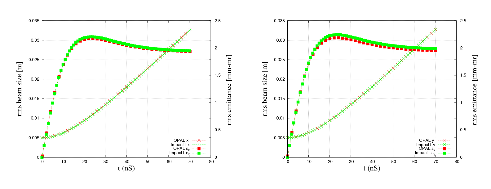
OPAL and Impact-T at 1 MHz.
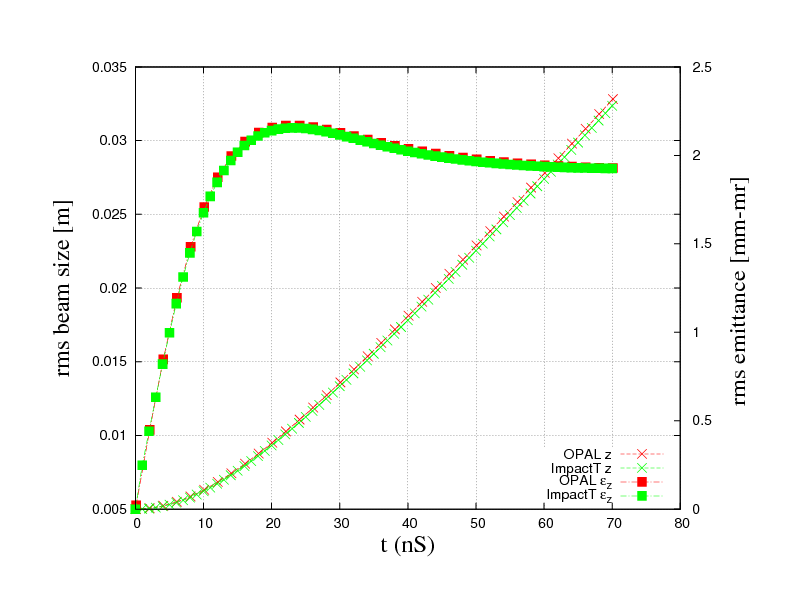
OPAL and Impact-T comparison.
E.5 References
- K. Crandall and D. Rusthoi, Documentation for TRACE: An Interactive Beam-Transport Code, Los Alamos report LA-10235-MS (1985).
- K. L. Brown et al., TRANSPORT - A Computer Program for Designing Charged Particle Beam Transport Systems, CERN 80-4 (1980).
- U. Rohrer, PSI graphic transport framework.
- M. Borland, elegant: a flexible SDDS-compliant code for accelerator simulation, LS-287 (2000).
- L. Qiang et al.,
Impact-Treferences as cited in the original appendix.